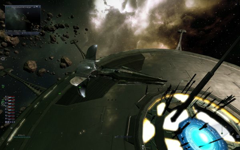
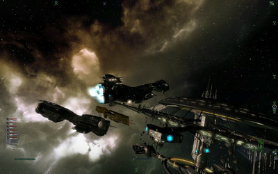

X³ REUNION
Dieser Artikel wurde für die folgenden Ubuntu-Versionen getestet:
Dieser Artikel ist mit keiner aktuell unterstützten Ubuntu-Version getestet! Bitte diesen Artikel testen und das getestet-Tag entsprechend anpassen.
Zum Verständnis dieses Artikels sind folgende Seiten hilfreich:
X³ Reunion  ist der dritte Teil der X-Reihe von EGOSOFT und die Fortsetzung der Story aus X-Beyond the Frontier
ist der dritte Teil der X-Reihe von EGOSOFT und die Fortsetzung der Story aus X-Beyond the Frontier  und das ebenfalls für Linux erschienene X² - Die Bedrohung.
und das ebenfalls für Linux erschienene X² - Die Bedrohung.
|  |  |
| Spielszene | Spielszene |
Das Spiel bietet dem Spieler eine aufregende Storyline im X-Universum. Gleichzeitig lässt es dem Spieler sämtliche Freiheiten, im X-Universum zu machen was er will. Man kann sich jederzeit aus der Storyline ausklinken um sich z.B. um sein Handelsimperium zu kümmern oder einfach nur ein bisschen durch die Sektoren zu fliegen und die Grafik zu genießen. Wenn man dann Lust hat kehrt man einfach zur Storyline zurück, ohne dadurch Nachteile im Ablauf der Story zu haben. Auch ist das X-Universum voll von Aufträgen und weiteren zusammenhängenden Stories (Plots genannt). Außerdem ist das Spiel durch selbsterstellte Scripte beliebig erweiter- und verbesserbar.
Die Lizenz für X3, welche Egosoft Linux Game Publishing gegeben hatte, ist Ende 2012 ausgelaufen. Seit Anfang 2013 kann das Spiel, nach einer neuen Protierung aus dem Hause Egosoft , über Steam erworben werden.
Der Registrierungsschlüssel von Linux Game Publishing kann zur Aktivierung des Spiels auf der Spieleplattform Steam verwendet werden. Hier den Schlüssel, welcher auf dem Handbuch zu finden ist, ohne Bindestriche eingeben. Besitzer der Windows-Versionen von X3: Terran Conflict oder der X: Superbox können das Spiel ebenfalls mit dem Registrierungsschlüssel (Community Key) bei Steam registrieren.
Installation¶
Linux Game Publishing¶
Für die Installation verwendet man den neuen Installer von lgp  . Nachdem man die Ausführrechte [5] gesetzt hat initiiert [1] man die Installationsroutine mit:
. Nachdem man die Ausführrechte [5] gesetzt hat initiiert [1] man die Installationsroutine mit:
./x3_new_installer.sh
Der Installationsdialog ist einfach zu bedienen und man hat hier die Auswahl ein reines X³-Reunion zu installieren, oder gleich das Bonus Pack und die XTendend-Mod mit zu installieren. Es empfiehlt sich die vorgeschlagenen Pfade zu übernehmen, da es sonst zu Problemen beim Speichern kommen kann. Anschließend müssen noch Updates eingespielt werden. Beim ersten Start ist der CD-Key einzugeben.
Bei 64 Bit-Systemen kann es notwendig sein, das folgende Paket zu installieren [6].
ia32-libs (universe, nur bis Ubuntu 13.04)
 mit apturl
mit apturl
Paketliste zum Kopieren:
sudo apt-get install ia32-libs
sudo aptitude install ia32-libs
Steam¶
Nachdem man das Basisspiel X3: Reunion über die Vertriebsplattform erworben hat kann es über den Client installiert [7] werden.
Update¶
Linux Game Publishing¶
Die Updates für die Linux-Version manuell oder automatisch ausführen.
Xtendend-Mod¶
Was ist die Xtendend-Mod (XTM)¶
Die Spiele der X-Reihe lassen sich über einen Script-Editor von jedem Anwender nach belieben erweitern und verbessern. So können dem Spiel z.B. ganz neue Handlungsstränge und Sektoren (Sonnensysteme!) hinzugefügt werden. Diese Erweiterungen des Spiels nennt man auch Mods. Die wohl bekannteste Mod ist eben die Xtendend Mod, kurz XTM. Der DVD-Version liegt dieser Mod in Version 0.74 bei.
Aktuelle Version installieren¶
Wenn man die Xtendend-Mod (XTM) in der aktuellsten Version installieren will, sollte man auf die Installation der DVD-Version (Version 0.74) verzichten und nach der Installation des Spieles den aktuellsten XTM von hier gerunterladen, entpacken und einfach ins X3-Verzeichnis kopieren. Da es sich um eine selbstextrahierene .exe-Datei handelt, funktioniert das Entpacken mit Wine. Zum kopieren bitte den Dateimanager mit Root-Rechten starten, da man in den Ordner /usr/local/games/x3 kopieren muss.
Etwas problematischer ist es, die Deutschen Sprachdateien zu entpacken [4], da diese nur als .spk-Datei vorliegen und die SPK-Tools für Linux sich nicht kompilieren ließen. Daher muss man hier wieder auf eine Windows-Installation zurückgreifen. Hat man die Datei dann aber entpackt braucht man diese ebenfalls nur in die entsprechenden Ordner der X3-Installation kopieren. Ob der X-Plugin-Manager für Windows auch mit Wine funktioniert, wurde nicht getestet.
Der Startbildschirm¶
Auf der rechten Seite sieht man den Startbildschirm des Spieles. Hier kann man verschiedene Einstellungen vornehmen. So kann z.B. die Grafikauflösung, das Eingabegerät und das Verzeichnis für Ingame-Screenshots geändert werden. Ein Ändern des Verzeichnisses für Screenshots brachte im Test allerdings nicht den gewünschten Erfolg. Es wurden dann überhaupt keine Screenshots mehr gespeichert. Daher lässt man auch hier am Besten das Standard-Verzeichnis. Hier kann man auch einstellen, ob das Spiel im Fenster-Modus oder im Vollbildmodus gestartet werden soll. Im Spiel bewirkt man das mit der Tastenkombination Alt + ⏎ .
Screenshots und Savegames¶
Standardmässig legt X3-Reunion ein Verzeichnis ~/.lgp/x3 im Homeverzeichnis des jeweiligen Benutzers an. Dieses enthält im Unterverzeichnis save die Savegames und im Unterverzeichnis recording die Ingame-Screenshots. Das Verzeichnis ist nicht sofort im Dateimanager zu sehen, da es sich um ein verstecktes Verzeichnis handelt.
Community und Support¶
Die X-Reihe hat ein rege tätige Community und die Programmierer bei © EGOSOFT sind sehr darauf bedacht, schnelle Bugfixes und Patches bereitzustellen. Viele Probleme werden in den zahlreichen Foren diskutiert und bringen weitere neue Spielideen. Wie bereits oben erwähnt kann jeder das Spiel beliebig erweitern, so dass hier eine richtige "Modding und Scripting-"Szene entstanden ist, die Mods und Scripte auch häufig der Allgemeinheit zur Verfügung stellen. Diese findet man im offiziellen X-Forum . Hier gibt es eine ausführliche Übersicht der Erweiterungen. Was die Einzelnen Skripte und Mods bewirken wird von dem jeweiligen Autor ausführlich beschrieben. Desweiteren hat jedes Skript und jeder Mod eine Readme-Datei mit der Beschreibung.
Links findet man hier.
Updates¶
Updates des Spieles bekommt man allerdings nicht wie bei der Windows-Version direkt von EGOSOFT, sondern man muss dazu das Tool lgp_update nutzen.
Deinstallation¶
Will man das Spiel wieder deinstallieren, so sollte dies über das lgp_uninstall-Tool erfolgen.

Infobox¶
| X³ - Reunion | |
| Genre: | Weltraum-Simulation |
| Sprache: | |
| Veröffentlichung: | 2008 |
| Publisher: | Linux Game Publishing / Egosoft |
| Systemvoraussetzungen: | Pentium 2.2GHz or better; 1.5 GB RAM; 3D Grafikkarte mit mind. 256 MB-RAM und shader 3.0; OSS or ALSA compatible Soundkarte, DVD-Laufwerk, 4,6 GB freier Festplattenplatz |
| Medien: | DVD (1) / Download |
| Strichcode / EAN / GTIN: | 835551000151 |
| Läuft mit: | nativ |
- Erstellt mit Inyoka
-
 2004 – 2017 ubuntuusers.de • Einige Rechte vorbehalten
2004 – 2017 ubuntuusers.de • Einige Rechte vorbehalten
Lizenz • Kontakt • Datenschutz • Impressum • Serverstatus -
Serverhousing gespendet von